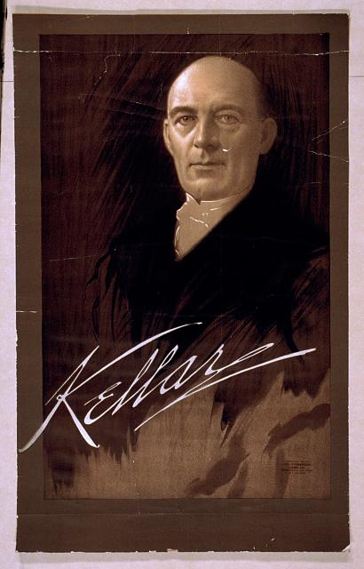
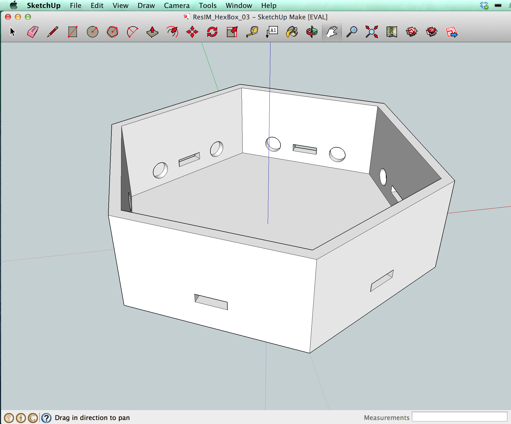

Magical Experiments:
Levitation in the Golden Age of Stage Magic
Devon Elliott PhD Candidate, History Western University
@devonelliott devonelliott@gmail.com http://devonelliott.net
Harry Kellar

John Nevil Maskelyne
How could I try out these illusions?
Desktop Fabrication
- 3D design
- 3D printing
- small CNC machines that work with desktop computer
http://www.sketchup.com
Physical Computing
"Physical computing is about creating a conversation between the physical world and the virtual world of the computer. The process of transduction, or the conversion of one form of energy into another, is what enables this flow."
-- Dan O'Sullivan and Tom Igoe, Physical Computing: Sensing and Controlling the Physical World with Computers (2004)
http://arduino.cc


Thanks!
Contact me at: Devon Elliott @devonelliott devonelliott@gmail.com http://devonelliott.net